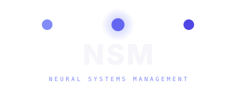
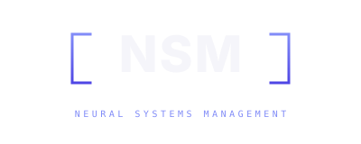
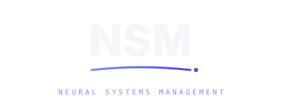
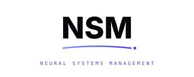
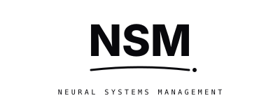
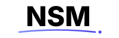
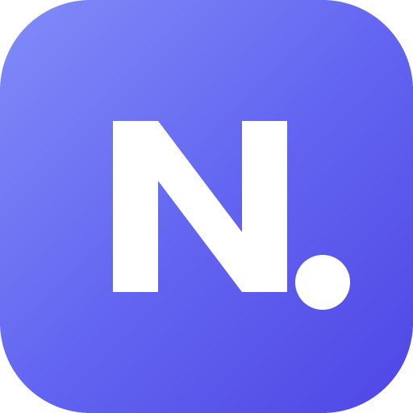

All three use the locked NSM wordmark and `Neural Systems Management` subtext. They differ in the supporting motif. Each scales from favicon to business card. Pick one — or tell me which two to merge.
Three nodes connected by a gradient line above the wordmark. Suggests neural network / connected systems. Speaks to the AI-and-automation positioning directly.

Indigo square brackets framing the wordmark. Matches the existing JetBrains Mono / code-CLI aesthetic on the portal. Says "we're operators, not marketers."

Wordmark with a confident gradient sweep underneath ending in the period from `Operations, Automated.` The accent IS the tagline made visual. Most premium-consultancy feel of the three.

Concept C is locked. The variant family below is shipped to portal/_brand/, and the lockup is wired live into the portal nav + footer (all 29 pages) and the B13 welcome email.




PNG raster exports shipped (nsm-favicon-1024/512/192/180/32.png) for app stores & social uploads, plus a print-ready double-sided business card at nsm-business-card.html (85×55mm trim + 3mm bleed). Full concept-C set is complete.